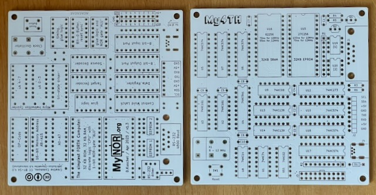

Die Platine wurde vom Originalautor getestet.
Projekt-Homepage • Interakiver Bestückungsplan • Schaltplan

9 Stück verfügbar.
| Komponente | Anzahl | Preis | Anbieter |
| Platine | 1 | €1.00 | |
| 100nF Kondensator | 10 | €0.30 | Mouser • Reichelt |
| 150Ω Widerstand | 1 | €0.03 | Mouser • Reichelt |
| 2.2kΩ Widerstand | 1 | €0.03 | Reichelt |
| 10kΩ Widerstand | 2 | €0.04 | Reichelt |
| 9-8 10kΩ Widerstandnetzwerk | 2 | €0.20 | Reichelt |
| BAT41 Diode | 1 | €0.04 | Reichelt |
| BC547 Transistor | 1 | €0.06 | Reichelt |
| BS170 Transistor | 1 | €0.18 | Reichelt |
| 8MHz Quarz, 4-Pin | 1 | €1.85 | Reichelt |
| 2x20 Stiftleiste | 1 | — | |
| 90° 1x8 Stiftleiste | 1 | — | |
| 6x6x5mm Taster | 1 | €0.35 | Reichelt |
| 90° D-Sub-9 Buchse | 1 | €0.35 | Reichelt |
| 90° Mini-USB Buchse | 1 | €0.67 | Reichelt |
| 62256 32k SRAM | 1 | €2.02 | Reichelt |
| 27C256 EPROM | 1 | €2.38 | Mouser |
| 24LC1026 I2C EPROM | 2 | €7.00 | Mouser |
| 74HC02 | 1 | €0.56 | Mouser • Reichelt |
| 74HC08 | 1 | €0.38 | Reichelt |
| 74HC14 | 1 | €0.86 | Mouser |
| 74HC74 | 1 | €0.86 | Mouser |
| 74HC138 | 1 | €0.50 | Reichelt |
| 74HC139 | 1 | €0.78 | Mouser • Reichelt |
| 74HC161 | 2 | €1.16 | Reichelt |
| 74HC273 | 1 | €0.83 | Reichelt |
| 74HC574 | 6 | €4.32 | Mouser |
| 74HC541 | 1 | €0.78 | Mouser |
| 8-Pin Sockel, schmal | 2 | €0.42 | Reichelt |
| 14-Pin Sockel, schmal | 5 | €1.05 | Reichelt |
| 16-Pin Sockel, schmal | 2 | €0.46 | Reichelt • Mouser |
| 20-Pin Sockel, schmal | 8 | €2.40 | Reichelt |
| 28-Pin Sockel, breit | 2 | €1.00 | Reichelt |
| nur Platine | €1.00 | ||
| Teilbausatz | €32.86 |
| Komponente | Anzahl | Preis | Anbieter |
| Platine | 1 | €1.00 | |
| 100nF Kondensator | 10 | €0.30 | Mouser • Reichelt |
| 150Ω Widerstand | 1 | €0.03 | Mouser • Reichelt |
| 2.2kΩ Widerstand | 1 | €0.03 | Reichelt |
| 10kΩ Widerstand | 2 | €0.04 | Reichelt |
| 9-8 10kΩ Widerstandnetzwerk | 2 | €0.20 | Reichelt |
| BAT41 Diode | 1 | €0.04 | Reichelt |
| BC547 Transistor | 1 | €0.06 | Reichelt |
| BS170 Transistor | 1 | €0.18 | Reichelt |
| 14MHz Quarz, 4-Pin | 1 | — | |
| 2x20 Stiftleiste | 1 | — | |
| 90° 1x8 Stiftleiste | 1 | — | |
| 6x6x5mm Taster | 1 | €0.35 | Reichelt |
| 90° D-Sub-9 Buchse | 1 | €0.35 | Reichelt |
| 90° Mini-USB Buchse | 1 | €0.67 | Reichelt |
| 62256 32k SRAM, 55ns | 1 | €4.44 | Mouser • Reichelt |
| 27C256 EPROM | 1 | €2.38 | Mouser |
| 24LC1026 I2C EPROM | 2 | €7.00 | Mouser |
| 74HC02 | 1 | €0.56 | Mouser • Reichelt |
| 74HC14 | 1 | €0.86 | Mouser |
| 74HC74 | 1 | €0.86 | Mouser |
| 74HC138 | 1 | €0.50 | Reichelt |
| 74HC273 | 1 | €0.83 | Reichelt |
| 74HC574 | 6 | €4.32 | Mouser |
| 74HC541 | 1 | €0.78 | Mouser |
| 74AC08 | 1 | €0.60 | Reichelt |
| 74AC139 | 1 | €0.85 | Mouser |
| 74AC161 | 2 | €2.58 | Mouser |
| 8-Pin Sockel, schmal | 2 | €0.42 | Reichelt |
| 14-Pin Sockel, schmal | 5 | €1.05 | Reichelt |
| 16-Pin Sockel, schmal | 2 | €0.46 | Reichelt • Mouser |
| 20-Pin Sockel, schmal | 8 | €2.40 | Reichelt |
| 28-Pin Sockel, breit | 2 | €1.00 | Reichelt |
| nur Platine | €1.00 | ||
| Teilbausatz | €35.14 |